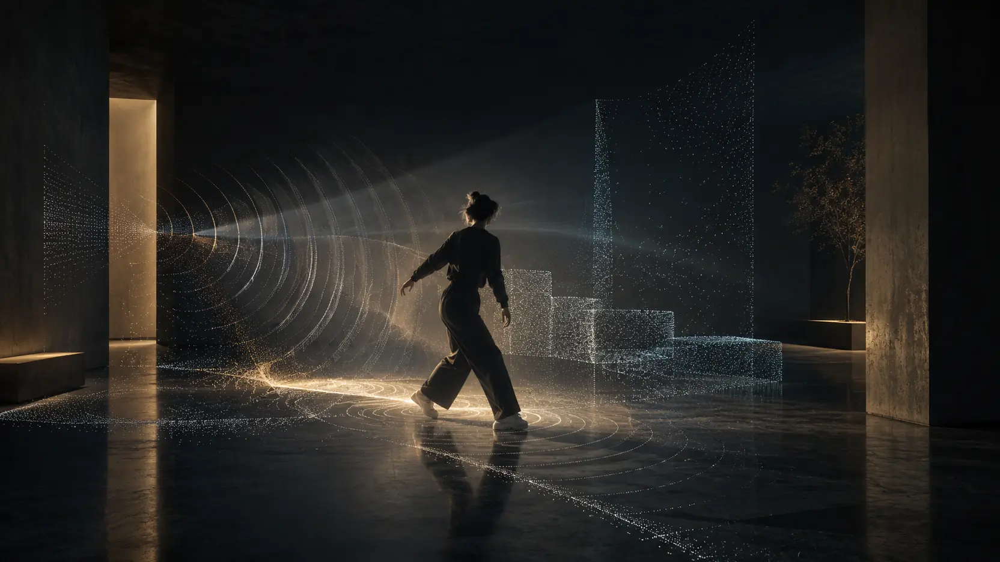

01
Robust multimodal world models · 2026 —
MakeSense
Reliability-aware world models for heterogeneous sensing, with explicit treatment of missing, asynchronous, and shifted modalities.
- World models
- Multimodal sensing
- Robust ML
Ongoing research